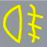

The main feature of pedestrians participating in road traffic is that _________.
- A. They move slowly.
- B. They like to get together and look on.
- C. They walk around at will and can easily change directions. Explanation here.
- D. All the above.
On the expressway, the minimum speed is 60 kilometers per hour, the maximum speed is 120 kilometers per hour. If there ARE //have// 2 lanes in the same direction on the expressway, the speed limit of the right lane is 60-100 kilometers per hour, and the speed limit of the left lane is 100-120 kilometers per hour. If there ARE //have// 3 lanes in the same direction, the speed limit of the far right lane is 60-90 kilometers per hour, that of the middle lane is 90-110 kilometers per hour, and that of the far left lane is 110-120 kilometers per hour. So overtaking must be from the left side?
What is the Minimum speed in this lane?

- A. 100 kilometers per hour
- B. 110 kilometers per hour
- C. 60 kilometers per hour
- D. 90 kilometers per hour Explanation here
Three privileged passing rights: turning around yields to going straight, coming from right side road goes first, turning right yields to turning left.
True or false: You have the privileged passing right of way at the intersection in this situation?

- A. True Explanation here
- B. False
This set of hand signals by traffic police indicates that the vehicles should _________.

- A. Go straight Explanation here
- B. Make a turn
- C. Stop
- D. Pull over
What is the max speed on this highway?

- A. 70 kilometers per hour
- B. 50 kilometers per hour
- C. 40 kilometers per hour Explanation here
- D. 30 kilometers per hour
Which of the following should a driver not do when driving downhill?
- A. Put the vehicle in neutral Explanation here
- B. Drive in a lower gear
- C. Brake to reduce speed
- D. Shift into a lower gear in advance
When this symbol is lit, it indicates that _________.

- A. The tail fog light is turned on. Explanation here
- B. The low beam light is turned on.
- C. The high beam light is turned on.
- D. The head fog light is turned on.
What's the meaning of this sign?

- A. Passing on both sides
- B. Passing by the right side
- C. Passing by the left side Explanation here
- D. Passing is prohibited